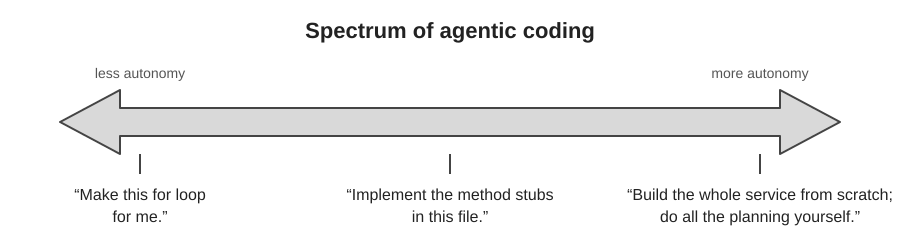
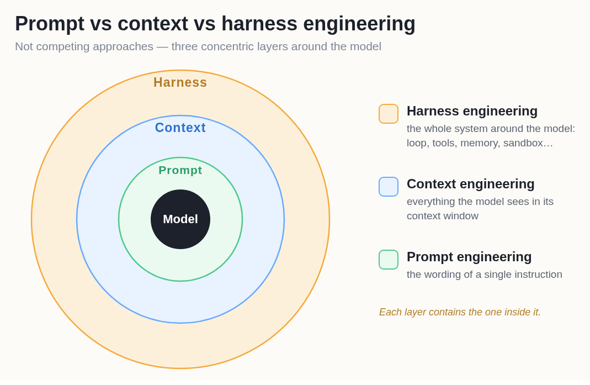
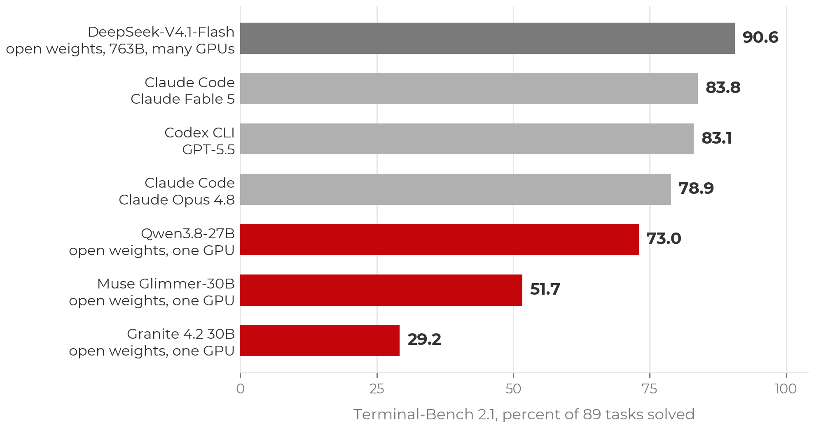

What Is Agentic Coding?
Last updated on 2026-09-16 | Edit this page
Estimated time: 15 minutes
Overview
Questions
- What distinguishes an agentic coding tool from autocomplete or a chat assistant?
- What is inside an agent, and what does the harness do that the model does not?
- Which tool should I pick, and how much does the choice matter?
- Is more autonomy better?
Objectives
- Define agentic coding and contrast it with chat-based and autocomplete-based AI assistance.
- Describe an agent as a model plus a harness plus tools running an agent loop.
- Place a request on the spectrum of autonomy, from a single edit to a whole project.
Definition
Agentic coding is a software-development approach in which AI agents plan, write, test, debug, and revise code with limited human intervention.
The word “agent”
The term is now applied to many products that only have a chat interface, so it needs a definition. In computer science an agent is a system that takes actions in an environment and observes the results, in pursuit of a goal. A chatbot produces text and the user acts on it. An agentic tool acts on its own: it edits files, runs commands, reads the output, and decides what to do next. The distinguishing question for any tool described as an agent is whether it acts or only advises. In agentic coding the tool acts continuously, which is the source of both its usefulness and its risk.
An AI coding agent is a persistent, tool-enabled process driven by a large language model. Earlier AI code assistants (the first GitHub Copilot, ChatGPT in a browser tab) worked in a suggest-and-accept loop, with the user carrying context in and code out and running everything by hand. An agent can instead:
- Read and navigate a codebase, rather than only the snippet it was given.
- Create and modify files, several at a time.
- Run terminal commands.
- Execute tests and inspect the failures directly.
- Search documentation.
- Develop and follow a plan.
- Iterate on its own work until the task is complete or it is blocked.
Typical requests include fixing a bug, adding a feature, refactoring existing code, writing and running tests, reviewing a pull request, investigating a failing job, and building a small application from a specification. The same capabilities give the tool access to the user’s files, shell, and any credentials left on disk, so an unmanaged agent can do real damage. The balance between capability and control is the subject of this lesson.
The spectrum of autonomy
The same tool can be used at different levels of autonomy. Three requests, from tightly directed to fully delegated:
- “Write this for loop for me.” One function; the user reads every line.
- “Implement the method stubs in this file.” A bounded task with a clear completion criterion; the agent does some planning and the user reviews the diff.
- “Build the whole service from scratch; do all the planning yourself.” The agent makes many decisions the user never considered, and the user reviews a project.

Across the three, the more autonomy you grant, the more of your judgment must be encoded in advance, in the prompt, in project context files, and in tests, and the more review is required afterwards. This principle recurs throughout the lesson. Most of the workshop concerns the middle of the spectrum: bounded tasks with a plan and a check.
More autonomy is not automatically better
A given task (add a utility function, write tests, open a pull request) can be done at any point on this spectrum. Moving toward autonomy reduces interruptions during the work and increases the review burden after it. The appropriate level depends on the task:
- Sensitive work or an unfamiliar codebase: interactive, with guardrails. The interruptions are useful.
- A quick question, brainstorming, or explaining an error: plain chat is sufficient.
- A well-scoped, clearly described task in a repository with good tests: delegation works, because the specification and the tests carry the intent.
The tasks researchers are most reluctant to delegate are usually the ones whose results they would find hard to check, rather than the ones that are hardest to do. That judgment is sound. The autonomy you can grant is limited by how well you can verify the result, which is the subject of the verification episode.
Inside an agent: model, harness, tools, loop
Many tools are now built for agentic coding, including Claude Code, Codex, GitHub Copilot’s agent mode, OpenCode, Cursor, and a growing number of open-source harnesses. Most can use several underlying language models. Two components should be distinguished:
- The model provides reasoning and code generation.
- The harness is the application around the model. It provides what the model needs to operate on a real codebase: file-system access, terminal and test execution, context management, planning and task tracking, tool integrations, memory, permission controls, and the loop that connects them.
The harness runs an agent loop: request, understand, plan, act, observe, revise, repeat. On each turn the model decides what to do next, the harness executes it (edits a file, runs the tests), and the result is added to the model’s context. In summary: agent = LLM + harness + tools + agent loop.
The same structure describes what you can influence. The prompt is the wording of a single instruction. The context is everything the model sees in its window, including the project’s instruction files. The harness is the system around both. Each layer contains the one inside it; the later episodes on prompting and context work at the two inner layers, and the safety episode’s limits are set at the outermost.

More advanced harnesses add an orchestrator–worker pattern, in which a primary agent divides a larger problem into tasks and delegates them to subagents that work in parallel on research, implementation, testing, and review. Multi-agent workflows became common toward the end of 2025. They occupy the far end of the autonomy spectrum and are the hardest to review.
Choice of tool
As of September 2026 the leading agents are close in capability. On Terminal-Bench 2.1, a benchmark of realistic command-line tasks, Claude Code and Codex score within about a point of each other, and GitHub Copilot uses the same Claude and GPT models. The harness affects the result (the same model scores differently in different agents), but the gap between the leading commercial tools is small.

Open-weight models are a viable option and are improving. The top Terminal-Bench score at the time of writing belongs to an open-weight model (DeepSeek V4.1 Flash), but at several hundred billion parameters it requires a cluster. Open-weight models that fit on a single GPU trail the frontier by tens of points. Closing that gap is an active research problem, and running a model yourself raises trust questions covered in the trust episode.
A table of tools would be out of date within months. The setup page lists routes to a working agent, including free ones (Copilot’s education tier, OpenCode with free models) for participants without a paid plan or workshop credits.
GitLab and other hosts
Everything interactive in this lesson is host-agnostic. An agent working on a checkout uses ordinary git, so GitHub, GitLab (including self-hosted), and Bitbucket behave the same. Only the cloud-agent surfaces (assigning issues to agents, cloud sandboxes) are GitHub-specific at present. Self-hosting the repository does not change where inference runs: code still goes to the model provider, so the data-policy rules apply.
- Agentic coding: AI agents plan, write, test, debug, and revise code with limited human intervention. An agent acts; a chatbot advises.
- Agent = LLM + harness + tools + agent loop. The model reasons; the harness supplies files, a terminal, tests, permissions, and memory.
- Requests range from a single edit to a whole project. More autonomy shifts effort from approving actions to specifying intent in advance and reviewing results afterwards.
- The leading tools are within a point or two of each other. Use what you have access to, and learn the principles.